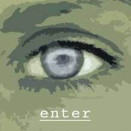

- Thieves
- By Evan Blewett
All along the watery horizon above Grenalda Bay, crimson, pink, and violet swirled like paints on a canvas, casting a serene shadow over the broken coast. In the wake below the sunset, a single tiny fishing vessel slowly trickled a path across the otherwise untouched water.
As the colors in the sky began to fade into night, shadows of all sizes and intentions overtook the gloomy forest surrounding the city of Grenalda. Shadows cast by the city walls, crafted high from centuries-old architecture, began to blanket the city in a similar darkness as the night danced merrily through the streets, eating at the very people who lived on them.
As if in a universal balance, fireflies of light awakened across the various neighborhoods. Torches burned and candelabras ignited, casting the demons of darkness away for yet another cold night.
For the humans dwelling in Grenalda, such conveniences stood necessary for survival, naturally. Lost in a claustrophobic environment of winding alleys and high buildings, the inhabitants of the city had grown accustomed to the ominousness of their daily life. Illumination from manufactured sources was no less important to the human way of life as water, and they took it for granted just as much. To the humans (though particularly to the Grenaldans), nature had always been a thing to be consumed and used up. Resources of the land supplied basic necessities like timber, water, and rich dirt to plant crops. Over time, the immediate areas around the dark city walls had become stale, lifeless husks of former glory. Those who drew reserves from the land had spread like the wingspan of a large carrion eater, farther and farther from the protection of Grenalda’s notoriously anti-non-human city guard.
Deeper the tainted hand of humanity spread, reaching needy fingers toward the southern forests of Soshan Wood. A mighty empire once stood here, dominated by nature’s protector, the elven race: peaceful and in tune with the harmony around them, though fierce in battle and willing to die for the protection of their home.
And so it went. Humanity washed over the magical kingdom and left little behind in its wake. The grand forests remained mostly empty now, populated by scattered villages of humans, elves, and monstrous denizens alike.
Perched high atop one of his favorite lookout spots in the city, Deyvon often pondered the differences in his ancestry, both human and elven. It tore him apart like a frail strip of fabric.
He scanned the dark skies to the south but saw only a limitless void across the land. Somewhere out there, deep against the black horizon, stood the forests where he had lived and grown. He sometimes used them to hide when his activities had alerted the attention of one too many city guardsmen. They served him well as a place to lie low, but he also knew how dangerous it was to stay there for very long. Anything could come along in those forests, from a pack of hungry, wild animals to a marauding band of goblins. Wilderness survival wasn’t exactly Deyvon’s strong suit.
Strange as it may have been, the half-elf felt safer within the confines of Grenalda. The city guard may be intolerable toward non-humans, but at least they were predictable. Deyvon had attributed his life to that fact on several different occasions.
Turning his attention toward the city rooftops again, he spotted a pair of warm bodies with his elven vision. Two larger, human figures crept along the tower buttress in his direction. Deyvon had partnered up with these men, Falbagar and Gamor, in recent weeks to achieve a common goal: lightening the satin-laced pockets of wealthy merchants and nobles of valuables worth more money than they would ever spend for the rest of their lives.
Their alliance didn’t totally comfort the young half-elf. From his own experience and observation, Deyvon found humans a perplexing lot, oftentimes speaking one thing yet intending another. To trust himself with fellow thieves was a risky gambit as well, but such was the life he had to live.
In the lead, Falbagar reached the end of the wall and signaled up to Deyvon. They had found a good place to work. Silently, Deyvon secured the end of his rope to a flagstaff on the guard tower roof he sat upon and vaulted over the side. A good place to sit, he knew, since the guard assigned to this post often took leisurely catnaps.
The three figures moved easily through the night, sprinting from rooftop to rooftop like a trio of hummingbirds. They eventually settled on an upper-scale inn called The Fox’s Crown, which was brimming with music and merriment from the tavern on the first floor.
Falbagar led Gamor and Deyvon along the apex of the slanted rooftop, but suddenly stopped and wheeled about. "Are you sure you can do this?" he asked, looking at Deyvon.
At that, Gamor began to unravel a thin cord and lowered an end down one side of the roof. Checking his weight, he silently repelled down one side of the steep rooftop.
"Of course I’m sure," Deyvon replied. "Haven’t we done this dozens of times before?"
Falbagar spoke with concern in his voice, "Things are going to be a bit different tonight. You’re going stay up here and keep a sharp eye out for any trouble. Gamor and I are going in."
Deyvon’s hands went to his sides. "Why?"
"Look," the large man said, "We can see what’s been going on lately. You just can’t resist anything pretty that catches your eye. Frankly, we’ve been wondering if you haven’t been holding out on us these past few nights."
"You’re wrong," Deyvon said.
"Am I? You sure you ain’t been sneaking a few extra gems and jewels under your belt?"
From the edge of the roof, Gamor’s hushed voice echoed back, "Shut up, both of you!" The stealthy man then dropped headfirst over the side to peer into a second-story window.
Falbagar cocked his head to one side, making an audible snap from his neck bones. "Just stay here and when we get back we’ll cut you in for the amount we think you’re worth. It’s either that or we cut you from the team," he said as he palmed the hilt of his short sword, a move not missed by the half-elf’s keen eyes.
As Falbagar followed the cord down the steep roof, Gamor popped up again, "Hey," he whispered, "now is our chance." One after another, the two men dropped over the edge of the roof and out of sight.
Deyvon’s lips tightened and he sat down, furrowing his brow with disdain. It seemed cracks had already begun to appear in their uneasy relationship. Although Falbagar had taken on the role of leader, he hardly carried any weight to give anyone else orders.
"I’ll show them," the half-elf whispered to himself, "I can sneak in there and bring back the largest haul yet. Falbagar will never doubt me again." His meager confidence began to grow as he placed his feet under him and crawled a few steps further along the rooftop. Unraveling his own rope, he fastened it to a chimney and carefully slid down the opposite side of the damp, shingled roof.
Lowering himself, Deyvon looked inside the room he had chosen. Private quarters, no doubt, possibly one of the more luxurious rooms in the inn. Darkness covered it, and from his perspective no one stirred. Off getting drunk in the tavern, the thief figured.
Deyvon reached down and pushed the window slightly. It fell open easily and the rogue lowered himself and swung inside. With a flick of his wrist, his trusty rope fell free of its binding and came down neatly for Deyvon to gather up, a trick he taught himself a long time ago.
Ambient light poured in through the window, casting a solemn blue glow on the walls. Deyvon could see a finely carved table, a tall cabinet, and a four-poster bed with lush silk blankets all crying out for his attention. Sensing no one else in the room, he quickly set to work. He started at the cabinet, but found no clothes hanging within. Puzzled, he searched the drawers in the table. Again nothing.
Great, he thought. Nobody home.
The jiggling of a key searching for a lock came from the room’s door, alerting the half-elf.
Light invaded from the hallway as a heavyset man harshly thrust the door open and lumbered in. Finding the room empty, he slammed the door behind him and without so much stopping to remove his cloak, flopped down onto the bed like a beached whale and passed out under the effects of too much ale.
Beneath the bed, Deyvon winced as the immense weight of the man pressed the mattresses down hard on top of him. For a moment, he thought the oaken frame would crack and give way, squashing him flat. He soon realized, however, that his life might be spared after all. The bed eased up, and before long a sound halfway between a gurgle and a snore roared from the fat man’s face.
Deyvon grabbed one of the bed’s legs and rotated out to peek about but still remain hidden. From up above, the man’s cherubic face, masked by thick red and gray whiskers, slept soundly, unaware of the world passing by.
The man’s arm dangled limply over the side, offering Deyvon his first prize of the night. Attached to a golden chain hung perhaps the most gorgeous ruby the half-elf had ever seen. Even in the dark of the room it shone with myriad sparkles that captivated him. Reaching up, Deyvon gingerly took hold of the chain and slipped it off the man’s thick fingers. Cut like a flat, diamond shape, the gem fit neatly into the thief’s palm.
So captivated by the stone was Deyvon that he almost failed to notice the door open again, much slower this time. A pair of feet showed themselves, stopping at the entrance as whomever it was looked in, and then quietly stepped inward. A second pair of feet followed closely behind.
The half-elf’s heart beat a little faster when he recognized the boots and realized that Falbagar and Gamor had just entered the room, hoping to steal what they could. He smirked to himself, knowing he had already taken what they would most likely kill to find.
To kill, Deyvon realized. He remembered Falbagar’s words back on the roof, and what trouble his current situation had in store. Falbagar accused him of keeping hidden loot for himself. Falbagar had been wrong until now. If they found him here, Deyvon knew his career, and life, as a rogue would be over.
Keeping his eyes on the feet, he watched as they skulked about the room, looking for something to steal. As Falbagar noiselessly moved around the bed to ransack the cabinet near the window, Gamor stepped next to a short trunk by the door.
It would only be a matter of seconds before one of them checked the bed. Rolling to his back, Deyvon planted his hands between the wooden slats under the bed and pushed up on the bulging mattress.
Up above, the man turned as he felt an unwelcome intrusion violating his slumber. He slowly sat upright and rubbed his bloodshot eyes. When he lowered his hands he found Falbagar standing over him with a mean grimace etched in his face.
Startled, the man the man cried, "Thief!" at the top of his lungs. Falbagar instantly pounced on him with knife drawn. They tussled for a moment, each grasping the other man’s wrists to wrestle control of the weapon.
As the mattress creaked and bounced above Deyvon’s head, several of the wooden slats began to crack.
Time to move, he thought.
Fortunately, Gamor dashed to the window, allowing Deyvon the opportunity to escape to the door. As he rolled out, the bed frame crumbled and crashed heavily to the floor.
A spark of light flashed by as the half-elf skidded out into the hallway. Running on instincts he ducked, allowing the oncoming sword to miss his neck and embed itself into the doorjamb where he once stood.
The sword’s wielder, a large muscular man dressed in sleeping attire, did not appreciate petty rogues breaking in and causing a ruckus, particularly a measly half-elf. Deyvon could see the prejudice common throughout the city focused intensely in this man’s eyes.
Deyvon scrambled to his feet just as the swordsman wedged his weapon free from the large notch it had created. He tumbled down the hall with the large man at his heels and a swinging sword at his back.
As the chase approached the switchback stairwell leading down to the first floor of the inn, Deyvon faked to one side, then reversed and quickly leapt over the banister. The man chopped down, narrowly missing the half-elf and putting a deep dent into the wood.
Without slowing his momentum, the man pulled his weapon free and proceeded in a huff down the stairs just as Deyvon crawled back up into the hallway again. His fingers screamed in pain from the experience of hanging by them, but the fake out seemed to have worked.
Just ahead, he saw the glimmer of the ruby he’d stolen lying alone in the hallway. Must have dropped it getting away, he figured. As speedily as his short legs would carry him, he dashed to it and reached down, grasping it with thin fingers.
Suddenly, a heavy foot stepped on his hand, crushing it to the floor. Deyvon looked up and saw Gamor grinning smugly down at him. "Well, well, what do we have here? It seems you just couldn’t resist, could you?"
Deyvon only stared back, unable to think of anything to say. He didn’t have to, though, for at the end of the hall, the swordsman appeared at the top of the stairs, this time with a handful of city guardsmen in tow.
"That’s them!" he growled.
The thieves exchanged glances and, with a harsh yank, Deyvon pulled his hand free. With a flip he stood and bolted into the first open door he found, attempting to slam it shut behind him.
Gamor’s boot stopped the closing, and the human rogue entered in behind the half-elf. "Give it to me," he demanded.
Deyvon backed up. "What?"
"That gem!" Gamor roared as he locked the door behind him. "Hand it over and I won’t cut your throat."
"We have to get out of here," Deyvon reasoned.
"Don’t worry," came the quick response, "one of us will."
As the pounding of heavy shoulders butted against the door, Gamor withdrew his sword and came at Deyvon. The smaller half-elf backed away until he could go no farther, his back planted against the room’s open windowsill.
In desperation, Deyvon grabbed for his own dagger, but an expert slash from his opponent cut the weapon’s sheath and it dropped to the floor. Before he knew what happened, he found Gamor’s blade thrust deep into his left shoulder. His eyes shut and mouth fell agape as he bore the pain.
"The gem!" Gamor demanded again, his hot breath suffocating the half-elf.
Behind him, the door burst open and the room began to flood with guardsmen. Gamor turned his head to see, which was the only distraction Deyvon needed. With his right hand he snatched a length of rope from his belt hook and punched Gamor square in the jaw, driving him back a step. He then flipped backward out the window while simultaneously tossing the lasso end of the rope over Gamor’s head.
He fell through the night, but only for a split-second as the rope pulled taut around its anchor.
In the room, the guardmen watched as the rogue that stood before them roughly fell back against the window, clutching his neck in desperation. They descended upon him.
Gamor futilely struck out several times in defense but became lost in a sea of kicks and cudgels.
Outside, the rope provided only a minimal break in Deyvon’s fall. Hugging the line as tightly as his one good arm would allow, he awkwardly swung inward and crashed through a large stained glass window, dropping unceremoniously to the floor.
He sat up and winced at the pieces of glass that had stuck to the exposed portions of his light tan-colored skin. Clutching his shoulder, he looked up and found himself facing a room full of standing people, some with a look of shock, and some with a look of anger. He had crashed into the tavern room of The Fox’s Crown.
Another contingent of guardsmen furiously began to push their way through the crowd of people. Recognizing the danger, Deyvon lurched to his feet. As he turned he saw the bartender, a short man with a thick mustache, staring at him and the broken window. "Sorry," he said smugly. He then dove back out the window, taking care to keep his shoulder wound free from further harm.
He dashed into the cobblestone street, leaving his dangling rope behind, and ducked down a side alleyway.
The guardsmen, however, weren’t fooled. They bolted out the front door and followed in pursuit. Rounding the corner to the next street, they hurriedly gave chase just as a small hay wagon drawn by two horses passed them in the opposite direction.
From the back, Deyvon watched the guards go as he buried himself deeper under the cold straw.
From his wrist hung the prize of his efforts, the glittering red ruby he had lifted from the fat man back at the inn. He twirled it a few times with his good hand, admiring the high quality cuts in the stone. He’d lost his weapon and his rope during the escapade, but the price this ruby could fetch would more than easily make up for it. Quickly he tucked it away as the wagon bounced uneasily down the road, the driver unaware of his new passenger.
Across the street on a nearby rooftop, Falbagar wiped a trickle of blood away from his chin as he watched Deyvon’s wagon roll toward the city gates. He wouldn’t soon forget the damned half-elf and swore vengeance. Unfortunately with the guardsmen on alert in the area, he didn’t have the time to stop and plan revenge. Yet.
|  |